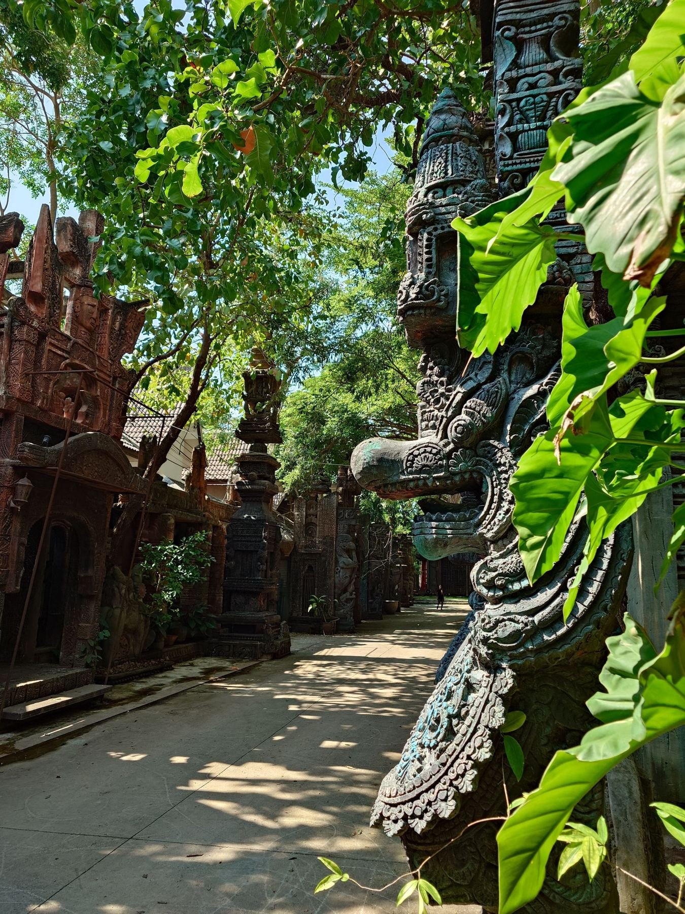
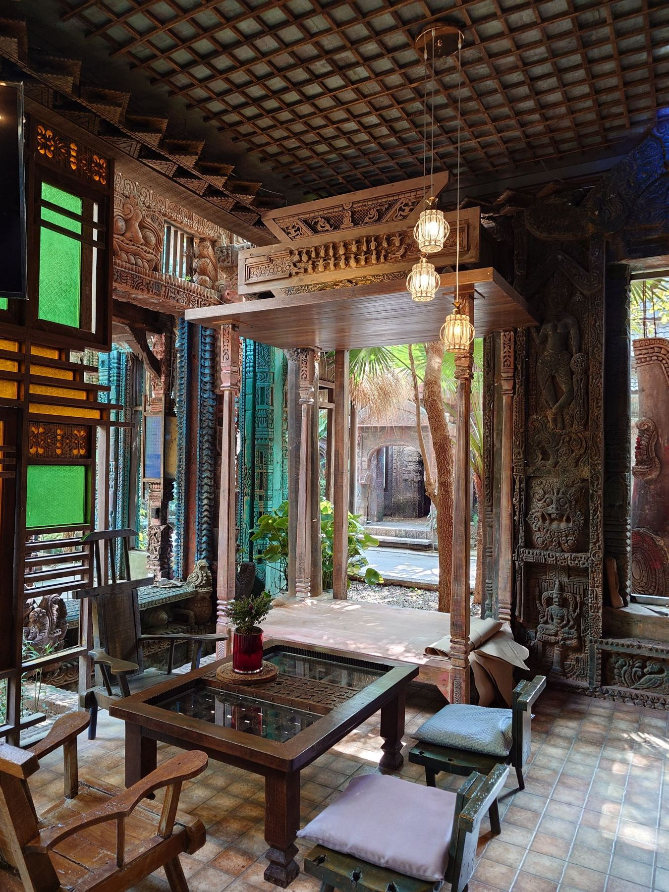
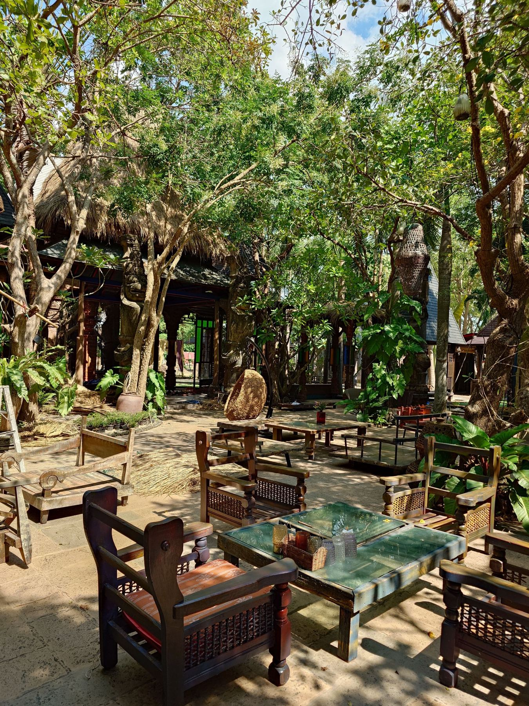
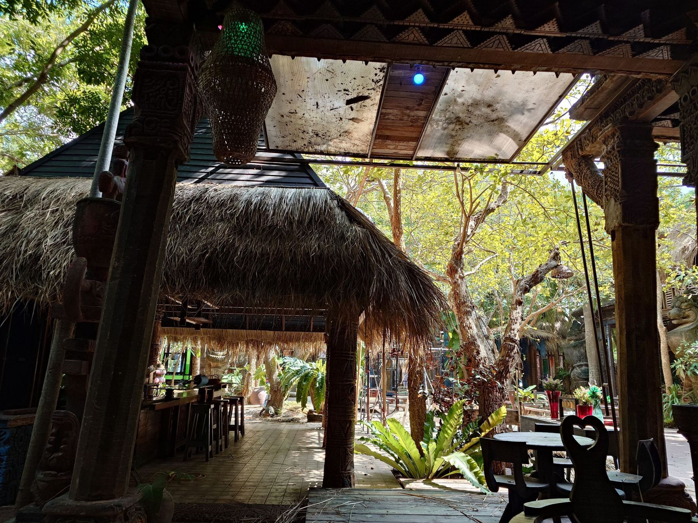
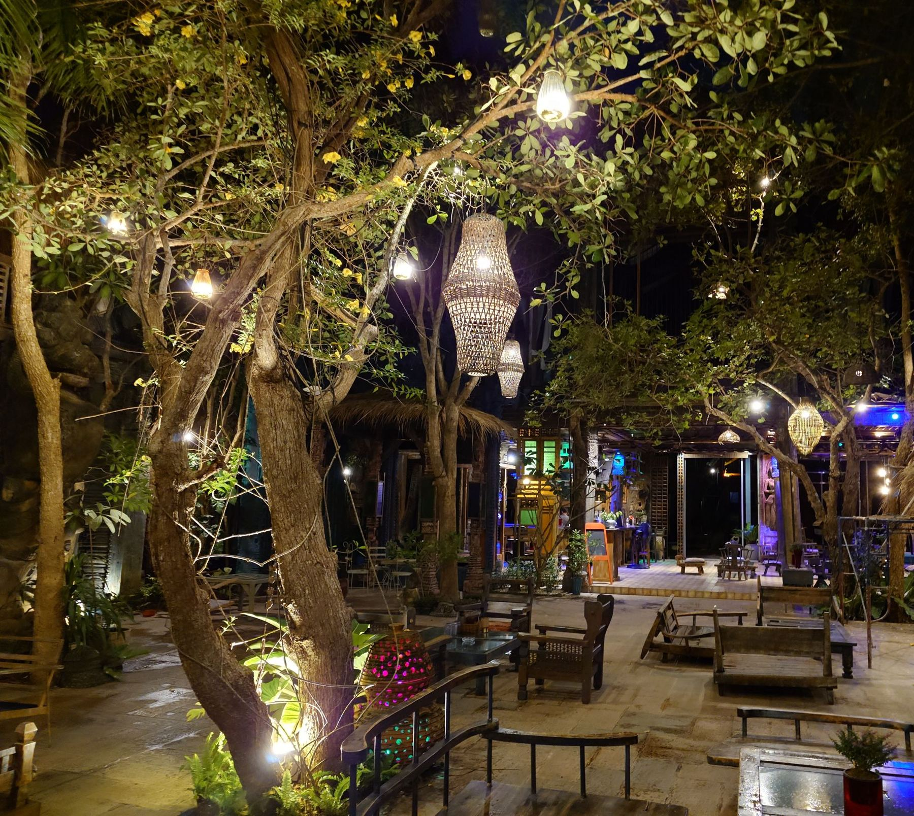
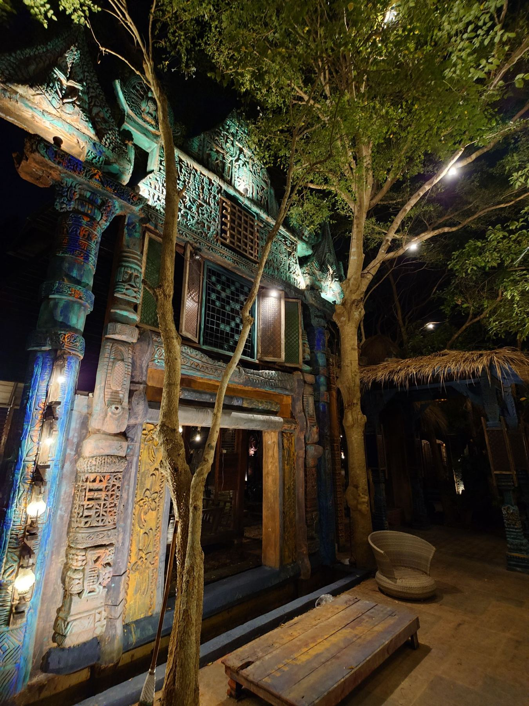
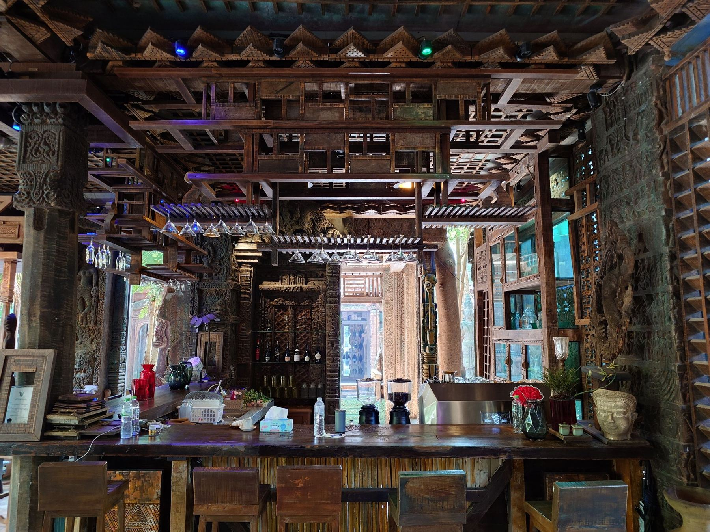
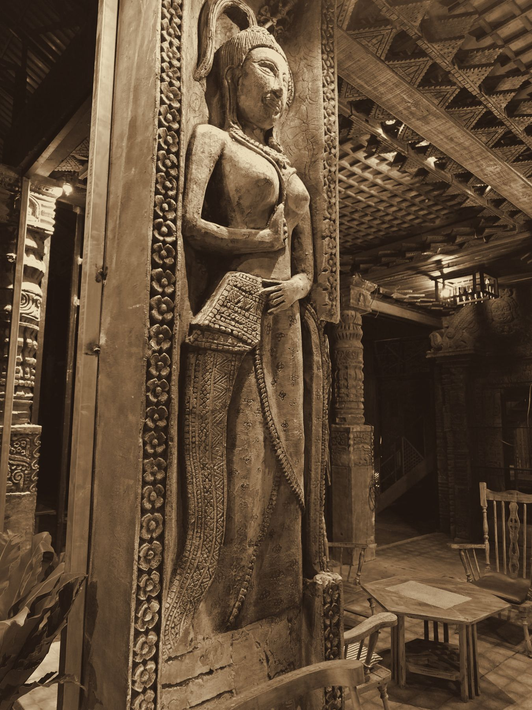

Khema
เขมา
Private pool villas in an old Khmer garden, Pattaya.
Reopening after renovation.
A garden that took twenty years to grow
Khema was built two decades ago from carved teak, laterite and stone, around trees that were left standing. The trees are taller now. The carvings have darkened. That is the part we kept.
What we changed is everything you touch: the villas, the pools, the beds, the light. The renovation is still underway, and we are sharing it as it happens.

What you notice first
- Shade from trees older than the buildings.
- Teak and stone worn smooth by hands.
- Quiet a few minutes from the city.
- Lanterns instead of floodlights after dark.


Mornings are for the courtyard: coffee, shade, and the sound of the leaves.
After dark the garden changes
Woven lanterns hang from the branches, the carved gates catch the light, and the bar opens under the teak roof.



The villas
Each villa has its own pool, garden walls and carved doors. They are being rebuilt now, and we will show them here when they are finished rather than before.
Villa photos, room types and rates will be added at opening.

Ask about a stay
Leave your details and we will write to you when booking opens, or message us directly.